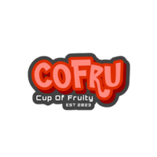

Portfolio
Below are some of the works I have made.
Microtical Monitoring with Zabbix and Data Visualization Using Grafana
This project was completed by me and a team of partners where we were given the job of creating visualization data for monitoring. In this case, what we monitored included: Mikrotik, Memory Storage, CPU, Temperature, and Client Network. This project has been completed and presented in front of mentors at PT. Pertamina Hulu Rokan Zone 4.
Link Project

COFRU - Cup Of Fruity
This project was completed by me and my group while on campus, namely for the final assignment with the project name "COFRU - Cup of Fruity". I act here as a logo editor and web design maker, which will then be revised by other members and will continue to create a prototype so that it can be responsive when tested.
Link Project